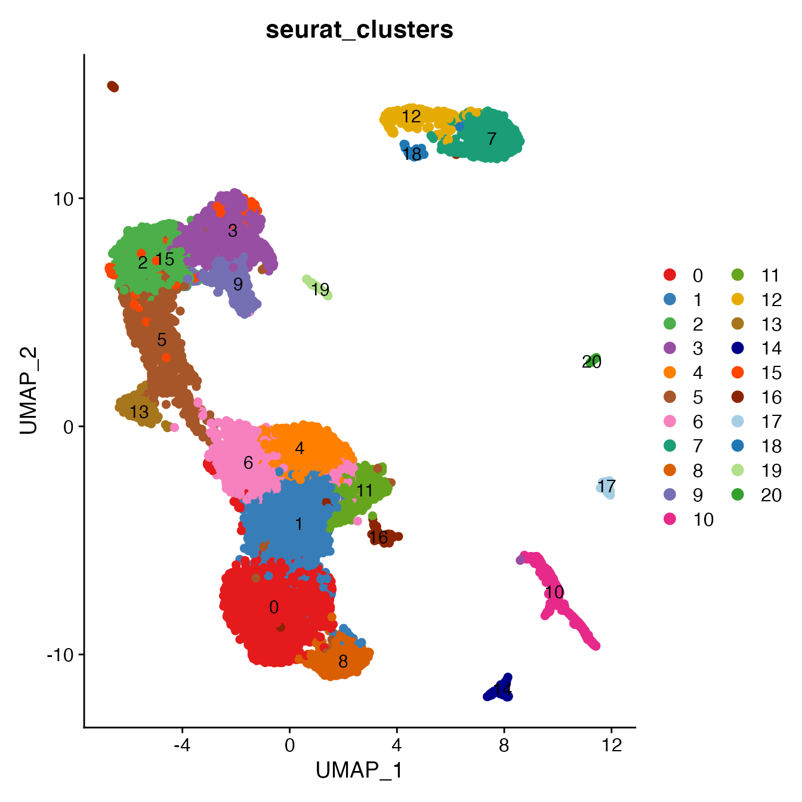
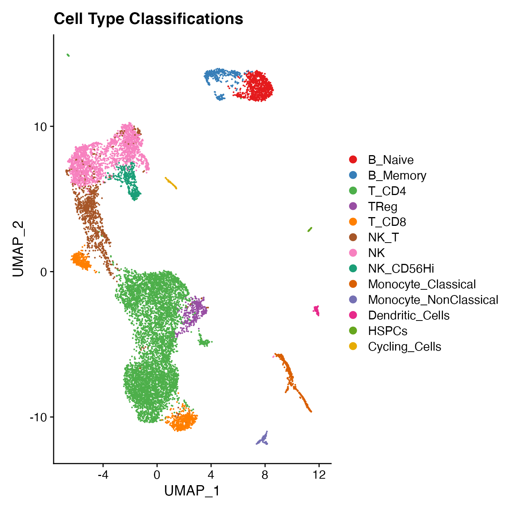
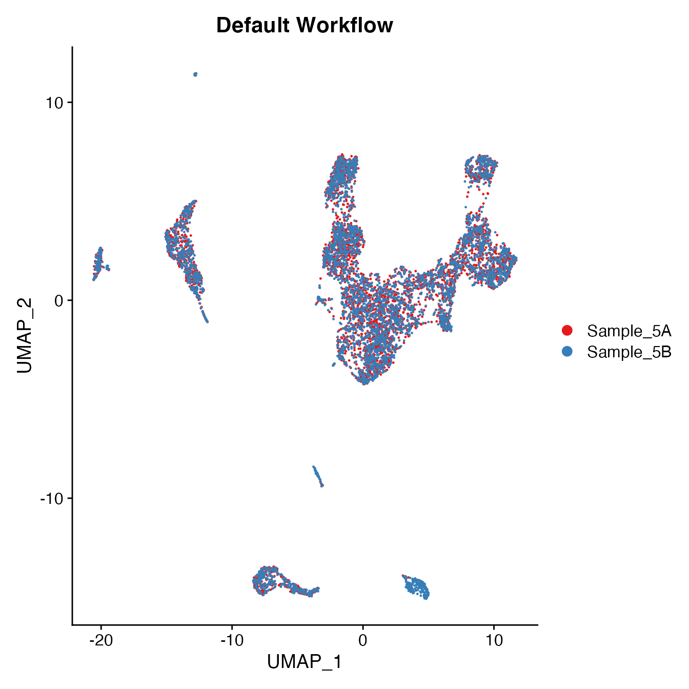
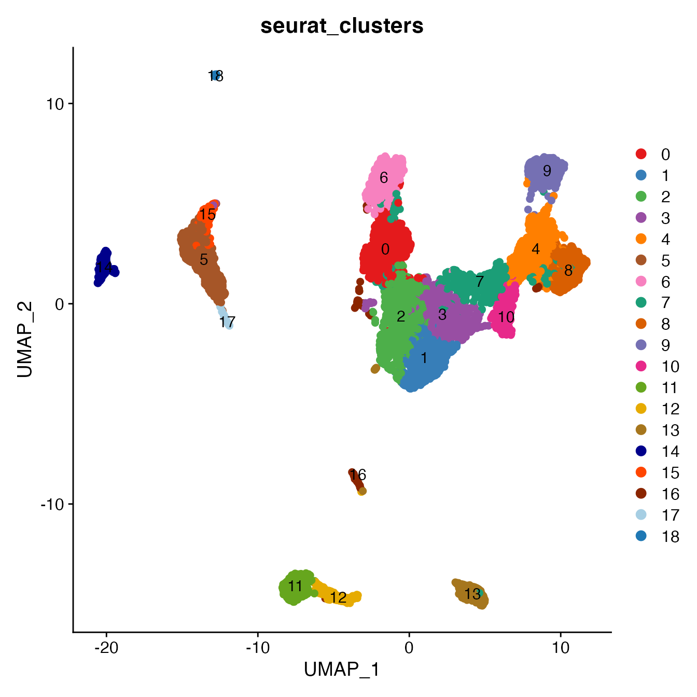
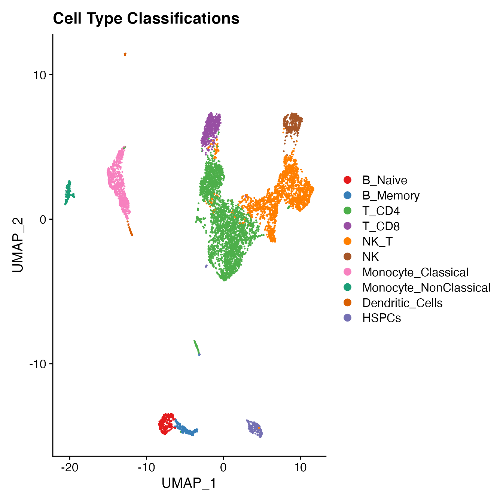

Sequencing Effects (Figures 2B-D)
Benjamin R Babcock
Sequencing_Effect.RmdIdentical (duplicate) Sequencing
Processing the Seurat Object
Data filtering & normalization
library(BatchNorm)
# Import unfiltered Seurat object (included with 'BatchNorm' package)
data(package = 'BatchNorm', PBMC4)
# Run "standard" Seurat workflow:
# Including filtering by mitochondrial percentage (+5 SD)
# Including data normalization, variable gene selection and gene scaling (performed on all samples together)
PBMC4 <- PBMC4 %>%
MitoFilter() %>%
NormalizeData(normalization.method = "LogNormalize", assay = "RNA", scale.factor = 10000) %>%
NormalizeData(verbose = FALSE, assay = "ADT", normalization.method = "CLR") %>%
FindVariableFeatures(selection.method = "vst", nfeatures = 2000) %>%
ScaleData() %>%
RunPCA(npcs = 30)Selecting the appropriate number of Principal Components for UMAP reduction
# Identify correct numbers of PCs
PBMC4.pca.test <- TestPCA(PBMC4)
PBMC4.pca.test[, 1:20]## [,1] [,2] [,3] [,4] [,5]
## SD 8.86559315 7.54140784 6.59695531 5.21211704 3.327591056
## Proportion 0.06400454 0.04631269 0.03543907 0.02212195 0.009016855
## Cumulative 0.06400454 0.11031723 0.14575630 0.16787825 0.176895104
## ZScore 30.92977162 22.31298983 17.01700917 10.53093419 4.148118824
## [,6] [,7] [,8] [,9] [,10]
## SD 3.163380180 2.859949562 2.584769979 2.470122244 2.459866405
## Proportion 0.008148881 0.006660578 0.005440502 0.004968577 0.004927404
## Cumulative 0.185043985 0.191704563 0.197145065 0.202113642 0.207041047
## ZScore 3.725373582 3.000498508 2.406262662 2.176412664 2.156359438
## [,11] [,12] [,13] [,14] [,15]
## SD 2.28032818 2.132632056 2.020492644 1.970615169 1.908314859
## Proportion 0.00423438 0.003703625 0.003324373 0.003162269 0.002965482
## Cumulative 0.21127543 0.214979053 0.218303425 0.221465694 0.224431176
## ZScore 1.81882333 1.560319956 1.375605718 1.296653371 1.200808411
## [,16] [,17] [,18] [,19] [,20]
## SD 1.814874348 1.679251903 1.627326360 1.613357328 1.590671998
## Proportion 0.002682182 0.002296291 0.002156475 0.002119612 0.002060423
## Cumulative 0.227113358 0.229409649 0.231566124 0.233685736 0.235746159
## ZScore 1.062827999 0.874880182 0.806783338 0.788828973 0.760001358
# 16 PCs with z > 1
# Proceed with 16 PCs for dimensional reduction & clustering
# Visualize PCs plotted by standard deviation:
ElbowPlot(PBMC4)Generating a UMAP and clusters
PBMC4 <- PBMC4 %>%
RunUMAP(reduction = "pca", dims = 1:16) %>%
FindNeighbors(reduction = "pca", dims = 1:16) %>%
FindClusters(resolution = .8)## Modularity Optimizer version 1.3.0 by Ludo Waltman and Nees Jan van Eck
##
## Number of nodes: 12721
## Number of edges: 437773
##
## Running Louvain algorithm...
## Maximum modularity in 10 random starts: 0.8794
## Number of communities: 21
## Elapsed time: 1 seconds
UMAPPlot(PBMC4, cols = colors.use, group.by = "orig.ident") + ggtitle("Default Workflow")
Measuring sample-UMAP integration (generating an iLISI score)
GetiLISI(object = PBMC4, nSamples = 2)## [1] 0.03041182Cell Typing of joint PBMCs object for CMS
Convert cluster classifications to cell type classifications
# For complete cell classification workflow see our vignette "Biaxial Gating of a Single Sample"
# More details can be found in figure S3 of our manuscript "Data Matrix Normalization and Merging Strategies Minimize Batch-specific Systemic Variation in scRNA-Seq Data."
UMAPPlot(PBMC4, cols = colors.use, pt.size = 2,
group.by = "seurat_clusters", label = T)
# B_Naive = 7
# B_Memory = 12, 18
# T_CD4 = 0, 1, 4, 6, 16
# TReg = 11
# T_CD8 = 8, 13
# NK_T = 5, 15
# NK = 2, 3
# NK_CD56Hi = 9
# Monocyte_Classical = 10
# Monocyte_NonClassical = 14
# Dendritic_Cells = 17
# HSPCs = 20
# Cycling_Cells = 19
Idents(PBMC4) <- PBMC4[["seurat_clusters"]]
Idents(PBMC4) <- plyr::mapvalues(Idents(PBMC4), from = c(7, 12, 18, 0, 1, 4, 6, 16,
11, 8, 13, 5, 15, 2, 3, 9,
10, 14, 17,
20, 19),
to = c('B_Naive', 'B_Memory', 'B_Memory', 'T_CD4', 'T_CD4', 'T_CD4', 'T_CD4', 'T_CD4',
'TReg', 'T_CD8', 'T_CD8', 'NK_T', 'NK_T', 'NK', 'NK', 'NK_CD56Hi',
'Monocyte_Classical', 'Monocyte_NonClassical', 'Dendritic_Cells',
'HSPCs', 'Cycling_Cells'))
Idents(PBMC4) <- factor(Idents(PBMC4),
levels = c("B_Naive", "B_Memory", "T_CD4", "TReg",
"T_CD8", "NK_T", "NK", "NK_CD56Hi",
"Monocyte_Classical", "Monocyte_NonClassical",
"Dendritic_Cells", "HSPCs", "Cycling_Cells"))
PBMC4[["Cell_Type"]] <- Idents(PBMC4)
UMAPPlot(PBMC4, cols = colors.use, label = F) + ggtitle("Cell Type Classifications")
Compare single-sample workflow cell type classifications to joint classifications (generating a CMS)
# PBMC Sample 4-A
data(package = 'BatchNorm', PBMC4A_Single_ID)
S4Acms <- GetCMS(object = PBMC4,
sample.ID = "Sample_4A",
reference.ID = PBMC4A_Single_ID)
# PBMC Sample 4-B
data(package = 'BatchNorm', PBMC4B_Single_ID)
S4Bcms <- GetCMS(object = PBMC4,
sample.ID = "Sample_4B",
reference.ID = PBMC4B_Single_ID)
# Average CMS
mean(c(S4Acms, S4Bcms))## [1] 0.03208177Non-identical (duplicate, differing depths) Sequencing
Processing the Seurat Object
Data filtering & normalization
# Import unfiltered Seurat object (included with 'BatchNorm' package)
data(package = 'BatchNorm', PBMC5)
# Run "standard" Seurat workflow:
# Including filtering by mitochondrial percentage (+5 SD)
# Including data normalization, variable gene selection and gene scaling (performed on all samples together)
PBMC5 <- PBMC5 %>%
MitoFilter() %>%
NormalizeData(normalization.method = "LogNormalize", assay = "RNA", scale.factor = 10000) %>%
NormalizeData(verbose = FALSE, assay = "ADT", normalization.method = "CLR") %>%
FindVariableFeatures(selection.method = "vst", nfeatures = 2000) %>%
ScaleData() %>%
RunPCA(npcs = 30)Selecting the appropriate number of Principal Components for UMAP reduction
# Identify correct numbers of PCs
PBMC5.pca.test <- TestPCA(PBMC5)
PBMC5.pca.test[, 1:20]## [,1] [,2] [,3] [,4] [,5] [,6]
## SD 10.58363440 6.72990013 5.33404735 4.18319372 4.00809819 3.201402719
## Proportion 0.08951584 0.03619491 0.02273756 0.01398448 0.01283828 0.008190508
## Cumulative 0.08951584 0.12571074 0.14844831 0.16243278 0.17527106 0.183461573
## ZScore 38.63602574 15.49285345 9.65189068 5.85273976 5.35525150 3.337952812
## [,7] [,8] [,9] [,10] [,11]
## SD 3.050269386 2.580910878 2.391094406 2.275051716 2.265910779
## Proportion 0.007435439 0.005323242 0.004569026 0.004136307 0.004103135
## Cumulative 0.190897011 0.196220254 0.200789280 0.204925587 0.209028722
## ZScore 3.010226103 2.093457970 1.766101548 1.578286015 1.563888285
## [,12] [,13] [,14] [,15] [,16]
## SD 2.155599448 1.993519631 1.886166179 1.840696473 1.816369254
## Proportion 0.003713354 0.003175932 0.002843087 0.002707663 0.002636565
## Cumulative 0.212742076 0.215918008 0.218761095 0.221468758 0.224105323
## ZScore 1.394709406 1.161449432 1.016982665 0.958203837 0.927344925
## [,17] [,18] [,19] [,20]
## SD 1.767894224 1.75277289 1.713076660 1.674299850
## Proportion 0.002497714 0.00245517 0.002345221 0.002240251
## Cumulative 0.226603038 0.22905821 0.231403428 0.233643679
## ZScore 0.867078782 0.84861289 0.800891354 0.755330596
# 14 PCs with z > 1
# Proceed with 14 PCs for dimensional reduction & clustering
# Visualize PCs plotted by standard deviation:
ElbowPlot(PBMC5)Generating a UMAP and clusters
PBMC5 <- PBMC5 %>%
RunUMAP(reduction = "pca", dims = 1:14) %>%
FindNeighbors(reduction = "pca", dims = 1:14) %>%
FindClusters(resolution = .8)## Modularity Optimizer version 1.3.0 by Ludo Waltman and Nees Jan van Eck
##
## Number of nodes: 7764
## Number of edges: 270395
##
## Running Louvain algorithm...
## Maximum modularity in 10 random starts: 0.8881
## Number of communities: 19
## Elapsed time: 0 seconds
UMAPPlot(PBMC5, cols = colors.use, group.by = "orig.ident") + ggtitle("Default Workflow")
Measuring sample-UMAP integration (generating an iLISI score)
GetiLISI(object = PBMC5, nSamples = 2)## [1] 0.0275641Cell Typing of joint PBMCs object for CMS
Convert cluster classifications to cell type classifications
# For complete cell classification workflow see our vignette "Biaxial Gating of a Single Sample"
# More details can be found in figure S3 of our manuscript "Data Matrix Normalization and Merging Strategies Minimize Batch-specific Systemic Variation in scRNA-Seq Data."
UMAPPlot(PBMC5, cols = colors.use, pt.size = 2,
group.by = "seurat_clusters", label = T)
# B_Naive = 11
# B_Memory = 12
# T_CD4 = 0, 1, 2, 3, 16
# TReg not detected
# T_CD8 = 6
# NK_T = 4, 7, 8, 10
# NK = 9
# NK_CD56Hi = 9
# Monocyte_Classical = 5, 15
# Monocyte_NonClassical = 14
# Dendritic_Cells = 17, 18
# HSPCs = 13 (contains erythrocytes)
Idents(PBMC5) <- PBMC5[["seurat_clusters"]]
Idents(PBMC5) <- plyr::mapvalues(Idents(PBMC5), from = c(11, 12, 0, 1, 2, 3, 16,
6, 4, 7, 8, 10, 9,
5, 15, 14,
17, 18, 13),
to = c('B_Naive', 'B_Memory', 'T_CD4', 'T_CD4', 'T_CD4', 'T_CD4', 'T_CD4',
'T_CD8', 'NK_T', 'NK_T', 'NK_T', 'NK_T', 'NK',
'Monocyte_Classical', 'Monocyte_Classical', 'Monocyte_NonClassical',
'Dendritic_Cells', 'Dendritic_Cells', 'HSPCs'))
Idents(PBMC5) <- factor(Idents(PBMC5),
levels = c("B_Naive", "B_Memory", "T_CD4", "TReg",
"T_CD8", "NK_T", "NK", "NK_CD56Hi",
"Monocyte_Classical", "Monocyte_NonClassical",
"Dendritic_Cells", "HSPCs", "Cycling_Cells"))
PBMC5[["Cell_Type"]] <- Idents(PBMC5)
UMAPPlot(PBMC5, cols = colors.use, label = F) + ggtitle("Cell Type Classifications")
Compare single-sample workflow cell type classifications to joint classifications (generating a CMS)
# PBMC Sample 5-A
data(package = 'BatchNorm', PBMC5A_Single_ID)
S5Acms <- GetCMS(object = PBMC5,
sample.ID = "Sample_5A",
reference.ID = PBMC5A_Single_ID)
# PBMC Sample 5-B
data(package = 'BatchNorm', PBMC5B_Single_ID)
S5Bcms <- GetCMS(object = PBMC5,
sample.ID = "Sample_5B",
reference.ID = PBMC5B_Single_ID)
# Average CMS
mean(c(S5Acms, S5Bcms))## [1] 0.03288283